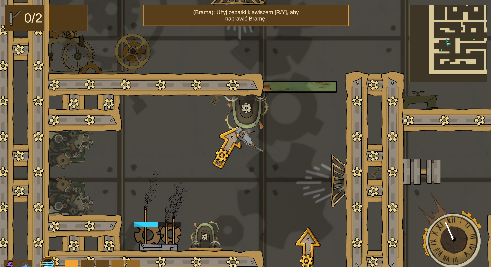

View Project & Files →
Junior Game & Level Designer
I am a Game & Level Designer with an IT background, studying Game Development at Collegium Da Vinci in Poznań. In my work, I focus on Game Design—crafting cohesive mechanics, rules, and interlocking gameplay systems—as well as Level Design, centered on spatial architecture, balanced pacing, and intuitive onboarding that teaches the player directly through gameplay.
Backed by a strong technical foundation, I smoothly implement design concepts directly inside the Unity engine (2D and 3D). I independently configure prefabs, triggers, and physics parameters, verifying object behavior in coordination with C# scripts to ensure both satisfying game feel and technical stability. I complement this with meticulous GDD documentation and agile teamwork utilizing Jira, GitLab, Miro, and Mural.


Currently open for Junior Game Designer, Junior Level Designer, and Technical QA opportunities in Poznań, remote, or hybrid arrangements.
Steampunk Arcade Platformer (Unity 2D/3D)
Joined the development team mid-production to expand environmental gameplay mechanics, design the player onboarding experience, fine-tune game feel through Unity physics calibration, and conduct technical QA debugging.
Designed 4 steampunk-themed environmental hazards and puzzle systems to enrich level variety and test player timing and spatial awareness.
Rhythmic timing-test trap with an instant-kill crush mechanic that doubles as a rideable moving platform. Players anticipate mechanical cycle rhythms to traverse vertical shafts.
Rotating steam barrier featuring a configurable angular safe zone and knockback force upon contact. Tests rotational air-dash precision as players leap through sweeping steam jets.
Environmental logic puzzle requiring valve manipulation and steam pressure rerouting to unlock blocked level sections. Encourages environmental observation before executing acrobatic lines.
Cyclical visibility hazard that obscures the player's field of view with dense steam clouds. Forces reliance on rhythmic audio cues and telegraphing animations to navigate perilous drops.
Architected an "invisible tutorial" structure delivering player education through spatial pacing, safe experimentation rooms, and progressive hazard combinations.
Risk-free movement familiarization zone with generous jump headroom and no lethal hazards, allowing players to calibrate movement parabolas and ledge grabs.
Single-variable challenge rooms isolating individual hazards (e.g., solo piston timing, single gear rotation), allowing clean mental model formation.
Comprehensive test section combining air dash, navigating rhythmic steam pistons, and manipulating interactive gear items to unlock the clock tower gateway.
Conducted an industry benchmark study comparing commercial platformer onboarding patterns. Formulated actionable UI/UX recommendations for tutorial prompts, introducing high-contrast dark-gold backgrounds and clear controller button iconography ([R/Y] prompts) to ensure prompt legibility against dense mechanical background art.
.PNG)
Diagnosed and fixed excessive knockback and ice-like sliding of interactive objects (oil cans, cassettes, gears) inside Unity by systematically auditing Rigidbody2D parameters and surface physics materials.
| Parameter | Pre-Pass (Default) | Post-Pass (Calibrated) | Physical Purpose |
|---|---|---|---|
Rigidbody2D.mass |
0.1 – 0.2 (Floaty) | 1.2 – 2.5 kg | Gives physical weight to collectible and interactable objects |
Rigidbody2D.drag |
0.0 (Infinite slide) | 2.8 – 3.5 | Simulates atmospheric air resistance inside clock machinery |
PhysicsMaterial2D.friction |
0.05 (Ice-like) | 0.65 – 0.85 | Prevents unwanted sliding off narrow moving platform edges |
CollisionDetectionMode2D |
Discrete (Tunneling) | Continuous | Prevents high-velocity projectiles and cuckoos tunneling through doors |
Diagnosed critical console runtime exceptions, patched level geometry sequence-breaks, and audited checkpoint persistence bugs directly inside Unity and Visual Studio.
Investigated recurring runtime console exceptions on lines 17 and 27 of PlayerCrushDetectorScript.cs. Diagnosed that dropped item prefabs and teleporter triggers lacked BoxCollider2D components, causing null references during crush passes. Restructured prefabs with verified colliders and defensive null-guards.
Identified a geometry and animation flaw in the cogwheel door (geardoor). Players could perform an airborne wall-jump off the upper door casing, flying completely over the collision boundary and bypassing essential progression locks without collecting required key items. Redesigned boundary colliders and ceiling geometry to enforce progression gating.
Tracked and documented a checkpoint bug where opened doors failed to reset their state properly upon player respawn. Documented reproducible test steps and linked gate persistence to the global checkpoint state manager.
Clockwork level architecture, lighting shaders, and obstacle navigation. Click to inspect at full resolution.
Vector logic diagrams illustrating hazard activation thresholds, angular safe zones, and environmental flow loops. Click to expand.
.png)
.png)
.png)
.png)
Access original engineering reports, bug documentation, benchmark analyses, and tutorial blueprints produced during development.
Original architectural level design blueprint mapping the 8 onboarding checkpoints (1.1–1.8), time-dilation mechanics, hazard spacing, inventory gates (gears, oil, cassettes), and teleporter trajectories.
Detailed technical analysis of MissingComponentException in PlayerCrushDetectorScript.cs, collider verification, and Rigidbody2D physics calibration for interactive objects.
Comprehensive QA verification of prefabs, checkpoint state persistence, geardoor geometry exploits, inventory system, and dash mechanics.
Comparative benchmark analysis of commercial onboarding architectures (Ori and the Blind Forest, Rayman Legends, Animal Well) to inform level pacing and non-verbal tutorials.
Specification of in-game tutorial strings, prompt copy, trigger thresholds, and high-contrast controller button iconography guidelines.
Asymmetric Co-op VR Elevator Defusal Game
Set inside a malfunctioning, plunging elevator shaft, Free Fall is an asymmetric VR co-op puzzle game inspired by Keep Talking and Nobody Explodes. The VR player is trapped inside the falling elevator cockpit facing imminent impact, relying entirely on verbal coordination with an external operator holding the physical Operations Manual.
Within the project, I was specifically and exclusively responsible for the design, mechanics, and defusal logic of the 3 core elevator console modules: Frequency Knobs, 3×3 Alphanumeric Keypad Matrix, and Color & Shape Sequence—authoring their complete mathematical decision trees, state tables, and corresponding manual documentation.
Solely designed and calibrated the emergency defusal mechanics, algorithmic decision trees, and manual documentation for the 3 primary elevator console modules:
Elevator Radio Console
2 Rotary Dials (0–9)
GHz Scale
The trapped VR operator views an elevator radio frequency display in GHz alongside two rotary dials (0–9). Under rapid elevator descent, the external manual expert interrogates the frequency value and elevator fuse indicators to guide precise calibration before system power failure.
Elevator Access Terminal
9-Button Matrix
6-Char Serial
To override the emergency brake lockout on the falling elevator, the defusal operator inputs a specific button activation pattern on a 3×3 keypad (columns A–C, rows 1–3). Correct pattern selection requires cross-referencing the elevator cab's 6-character alphanumeric serial number against a hierarchical priority logic table.
Elevator Stabilization Console
Pool: 4–7 Objects
Target: 3 Tiles
A variable pool of 4–7 distinct geometric glyphs appears on the elevator diagnostic screen with differing colors and shapes. The defusal operator must synthesize verbal descriptions of shapes and pigments to input a precisely ordered 3-tile sequence to stabilize the elevator's descent speed.
Captures from the Unity XR simulation showing the tactile falling elevator cockpit, dual rotary dials, alphanumeric matrix keypad, and diagnostic monitors. Click to enlarge.


Original decision trees, state machines, and alphanumeric lookup matrices authored for the Defusal Manual covering the 3 elevator console modules. Click to expand.


The complete localized player manual designed for the defusal operator to guide the trapped VR player through elevator stabilization.
The definitive operator handbook containing complete decision logic, mathematical condition tables for Frequency Knobs, 3×3 Keypad serial matching, and Color/Shape sequence priorities authored to resolve emergency elevator lockouts.